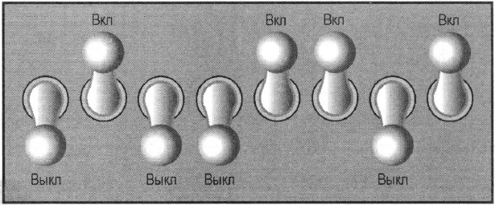
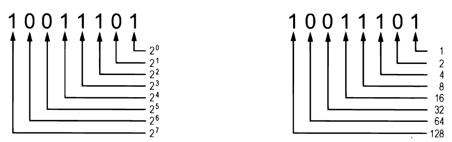
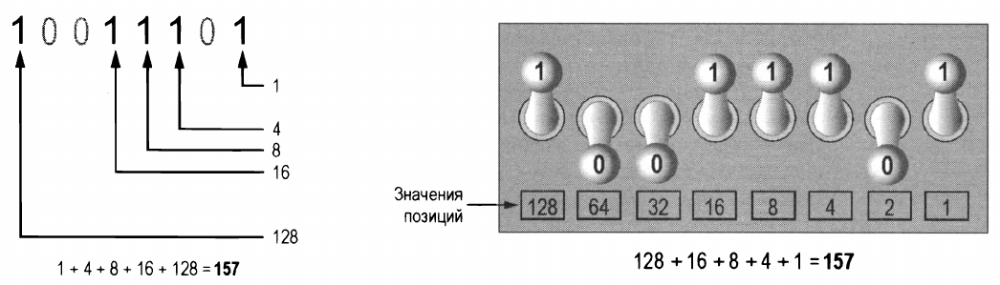
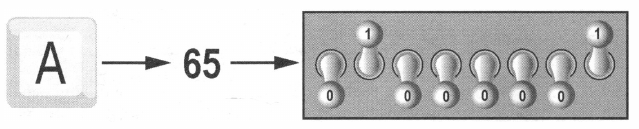

Ключевые положения:
Все данные хранятся в компьютере в виде последовательностей, состоящих из гулей и единиц.
Память компьютера разделена на единицы хранения, которые называются байтами.
Байт (англ. byte) (русское обозначение: байт и Б; международное: byte и B) — единица хранения и обработки цифровой информации; совокупность битов, обрабатываемая компьютером одновременно. В современных вычислительных системах байт состоит из 8 бит и, соответственно, может принимать одно из 256 (от 0 до 255) различных значений (состояний, кодов).
Как видно из определения каждый байт разделен на восемь меньших единиц хранения, которые называются битами, или разрядами.
Бит (русское обозначение: бит; международное: bit; от англ. binary digit — двоичная цифра; также игра слов: англ. bit — кусочек, частица) — единица измерения количества информации. 1 бит информации — символ или сигнал, который может принимать два значения: включено или выключено, да или нет, высокий или низкий, заряженный или незаряженный; в двоичной системе исчисления это 1 (единица) или 0 (ноль). Это минимальное количество информации, которое необходимо для ликвидации минимальной неопределенности.
Обычно программисты рассматривают байт как восемь переключателей, каждый из которых может иметь два положения "Включено" и "Выключено."
Рис.1.2. Представление байта в виде восьми переключателей (битов)
Итак, в компьютерных системах выключенный бит представляет число 0, а включенный - число 1. Что делает его использование для представления чисел весьма ограниченным. Но это же делает его идеальным для применения с двоичной системы исчисления, в которой все числовые значения записываются как последовательности нулей и единиц.
Пример числа записанного в двоичной форме:
10011101
Позиция каждой цифры в двоичном числе соответствует определённому значению. Как показано на рис. 1.3 слева, начиная с самой правой цифры и двигаясь влево значения позиций равняются: 20, 21, 22 ..., 27.
На этом же рисунке справа, показано та же схема, но значения уже вычислены: 1, 2, 4, ..., 128.
Рис.1.3. Значения двоичных разрядов
Для того чтобы определить значение двоичного числа, нужно сложить позиционные значения всех единиц. так, в двоичном числе 10011101 позиционные значения единиц равняются 1, 4, 8, 16, 128. Сложив эти значения получим 157 (рис.1.4 слева).
Значит, двоичное число 10011101 равняется 157 в десятичной системе исчисления.
Рис.1.4. Перевод из двоичного исчисления в десятичное
На рис. 1.4 справа показано, как можно изобразить хранение числа 157 в байте оперативной памяти. Каждая единица представлена битом в положении "Вкл.", а каждый ноль - битом в положении "Выкл."
Когда всем битам в байте назначены нули, т.е. они выключены, значение байта равняется 0. Когда всем битам в байте назначены единицы (они включены), байт содержит самое большое значение, которое в нём может быть размещено. Оно равняется 1 + 2 + 4 + 8 + 16 + 32 + 64 + 128 = 255. Этот предел является следствием того, что в байте всего 8 бит.
Если необходимо записать число больше 255, нужно использовать ещё один байт. При использовании двух байтов вместе в итоге получается 16 бит. Позиционные этих 16 бит будут 20 21, 22 ... 215. Максимальное значение, которое можно разместить в двух байтах рано 65 535 (рис.1.5). Если же нужно будет записать ещё большее число, то потребуется больше байтов.

Рис. 1.5. Использование двух байтов для представления числа больше 255
Любые данные в компьютере представлены в виде двоичных чисел. В том числе и символы, такие как буквы и знаки препинания.
За прошедшие годы для представления символов в памяти компьютера были разработаны различные стандарты кодирования. Исторически очень важным является стандарт кодирования ASCII (American Standard Code for Information Interchange). Аббревиатура ASCII произносится "аски".
Однако у стандарта кодирования ASCII есть существенный недостаток, он определяет коды только для 128 символов.
Для исправления этого недостатка в 1992 году Кеном Томпсоном и Робом Пайком был разработан стандарт кодирования UTF-8.
Кодировка UTF-8 в настоящее время является доминирующей в веб-пространстве, нашла широкое применение в UNIX-подобных операционных системах и фактически стала стандартным набором символов, используемых в компьютерной индустрии.
Что же такое "стандарт кодирования символов UTF-8"?
Википедия даёт такое определение:
UTF-8 (от англ. Unicode Transformation Format, 8-bit - формат преобразования Юникода, 8-бит) - стандарт кодирования символов, позволяющий компактно хранить и передавать символы Юникода, используя переменное количество байт (от одного до четырёх) и обеспечивающий полную обратную совместимость с 7-битной кодировкой ASCII. Стандарт UTF-8 официально закреплён в документах RFC 3629 и ISO/IEC 10646 Annex D.
Примером может служить кодирование прописной английской (латинской) буквы A. Когда на компьютерной клавиатуре набирают букву A в верхнем регистре, в памяти ПК сохраняется число 65, в двоичном коде - 01000001(рис. 1.6).
Для других символов также есть свои коды, например, прописные английские:
а строчная английская a кодируется как - 97 (01100001).
Ознакомившись с хранением чисел в памяти можно подумать, что двоичная система счисления может использоваться только для целых положительных чисел и нуля. Представить отрицательные и вещественные числа (такие как 3,14) при помощи рассмотренного выше метода невозможно.
Однако компьютеры способны хранить и отрицательные, и вещественные числа. Для этого в них используются специальные схемы кодирования. Отрицательные числа кодируются с помощью метода дополнения до двух, а вещественные числа - в форме записи с плавающей точкой (запятой).
Не важно понимать как эти схемы работают, главное знать, что они используются для представления отрицательных и вещественных чисел в двоичном формате.